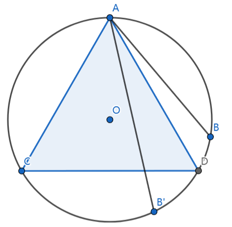
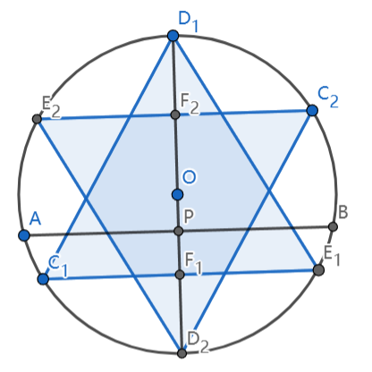
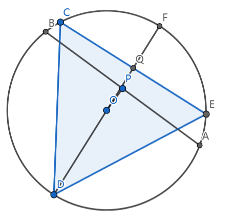

圆内随机弦
原问题是圆内随机取一条弦，其长度不小于圆内接正三角形的边长的概率是多少。在该问题下不同的随机方式会得到不同的结果，这里简单推导一下。
随机两点
在圆内随机两点，可以先固定一点，然后考虑另一个点的位置。设圆为 \(O\)，固定一个点为 \(A\)，动点 \(B\)，那么 \(AB\) 即为弦长，那么过点 \(A\) 做圆内接正三角形，交于点 \(C\) 和 \(D\)，那么只有 \(B\) 落到弧 \(\overset{\LARGE{\frown}}{CD}\) 上，\(AB\) 才能大于 \(AC\)，而 B 落入 \(\overset{\LARGE{\frown}}{CD}\) 的概率很好求，就是 \(\overset{\LARGE{\frown}}{CD}\) 长度除以圆周长，即 \(\frac{1}{3}\)。
而 \(A\) 本身就是随机选择的，点 \(A\) 的选择和点 \(B\) 的选择是独立的，所以总概率就是 \(\frac{1}{3}\)。

随机直径
这里先随机直径 \(D_{1}D_{2}\)，然后分别过 \(D_1\) 和 \(D_2\) 做圆内接正三角形 \(C_1D_1E_1\) 和 \(C_2D_2E_2\)，可以看到除了 \(D_1\) 外，三角形 \(C_1D_1E_1\) 与直径还有一个交点，记为 \(F_1\)，另一边同理，记为 \(F_2\)。那么中点在这根直径上的所有弦一定垂直于直径 \(D_1D_2\)，设为 \(AB\)，同时交直径于点 \(P\)。通过图，显然可以得知，只有当 \(P\) 点位于 \(F_1F_2\) 上时，其长度才能大于 \(E_2C_2\)，即圆内接正三角形的面积，即概率为：
\[ P=\dfrac{|F_1F_2|}{|D_1D_2|} \]
设半径为 \(1\)，那么就有
\[ P=\dfrac{|F_1F_2|}{|D_1D_2|}=\dfrac{2|F_1D_1|-|D_1D_2|}{|D_1D_2|}=\dfrac{2\times \frac{3}{2} - 2}{2}=\dfrac{1}{2} \]
由于选直径不影响后续选择，即独立，所以总概率为 \(1\over 2\)。

随机中点
由于弦中点可以唯一确定一个弦，所以可以直接在圆内随机弦中点。如图所示，此时需要满足 \(|OP|\le|OQ|\)，即 \(P\) 点在以 \(O\) 为圆心，\(OQ\) 为半径的圆 \(O'\) 内，根据几何概型，可以得到概率为（设圆半径为 \(1\)）：
\[ P=\dfrac{S_{\odot O'}}{S_{\odot O}}=\dfrac{|OQ|^2}{|OF|^2}=\dfrac{\left(\frac{3}{2}-1\right)^2}{1^2}=\dfrac{1}{4} \]
